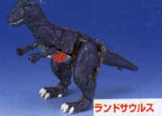
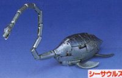
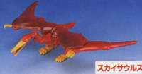
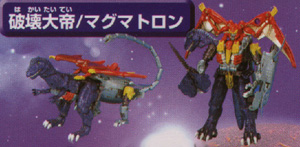

Magmatron
(Target Exclusive)
Magmatron
(Target Exclusive)
Allegiance
: Maximal (Dinobot)
Size
: Ultra
Difficulty of Transformation
: Very
Hard
Color Scheme
: Sea green, yellow,
red, shiny light blue, sparkly lavender, dark blue, gray, silver, dark
red, brown, and some light green
Rating
: 7.5
(All right, before we
start on this review, I need to discuss a few things that are unique about
this toy. First of all, as you can tell from the title above, this is a
Target Exclusive toy, and is only available at Target stores, as well as
a few collector online stores. This is a direct release of the Japanese
Beast Wars Neo figure of the same name, and there are no variations whatsoever
from the Japanese toy- not even the color scheme is varied. The only difference
between the American Dinobot Magmatron and the Japanese Destron Magmatron
is the packaging. The packaging emphasizes that this is a Japanese transformer
released in America, and has Japanese writing all over the package, with
English in the appropriate places, of course. This toy is very unique in
itself, as it consists of three dinosaurs {Skysaur, Landsaur, and Seasaur
are their names individually} with no individual robot modes of their own,
that combine to form one big robot, or one big dinosaur. Now, on to the
review.)

Landsaur, the raptor,
is, in my opinion, the worst of the three individual dinosaur modes. Although
the detailing is excellent, there are a few obvious extras- Namely, the
robot chest plate on his underside and his robot feet on the back of his
dino hips. His legs are also way too large proportionally, and make him
look a bit awkward. The chest-and-arms assembly can also rotate a little
too easily, and it's a bit difficult to get them into a locked position.

Seasaur, the plesiosaurus,
is pretty cool-looking. He has a "swimming" action, where it you squeeze
his back to fins together, his front two fins will push apart, like he's
paddling through water. His neck is very long and articulated, as a plesiosaurus'
should be, but the individual neck pieces are a bit too blocky- if they
were more rounded, the neck would look much nicer. There are no extras
in this mode, although his main body can split in too rather easily, so
watch out for that.

Skysaur, the quezodactyl
(hope I spelled that right..) and the smallest individual dinosaur, is
also, in my opinion, the coolest. The detailing is decent, and the articulation
is pretty darned good too, with the neck able to move in three places.
He has a bit of a potbelly to hid the robot head, but this is no big loss.
The highlight of this mode, however, is the really cool wing-flapping feature.
When you press his tail in, his wings flap, but the wing-arms, which are
separate pieces on his underside, also move up and down too, making the
flapping action look more realistic.

Magmasaur, the combined
dinosaur mode, looks...well... like three dinosaurs jammed together. Although
it was creative to make the plesiosaurus head the tail, it just doesn't
work out, since the head is so incredibly obvious. The wings provided by
Skysaur stick out a bit too far from the rest of the back, and look too
small proportionally to lift this monstrous dino. Not a very good mode.
Magmatron, the combined
robot mode, on the other hand, looks very cool. It becomes apparent in
this mode that Hasbro made one big mistake when getting this guy ready
for America- they forgot to put Dinobot spark crystals in! The Predacon
spark crystals are easily visible in this mode, which should not have been
overlooked- this is a bit of a letdown. This guy does look more like a
Predacon than a Maximal, though, with his face filled to the brim with
teeth. The pterodactyl wings work well as large "bat ears" but this is
the only extra that really doesn't get in the way much. The plesiosaurs
neck sticks out behind the robot a lot, and thus makes him look pretty
odd from a side or back view. His raptor head and plesiosaur shield get
in the way quite a lot too, not to mention his plesiosaur shield doesn't
stay on the back of his arm that well in the first place. There is also
a noticeable gap between his chest and his robot head. This mode is pretty
good for a combined dinosaur mode, however, and is definitely beefed up.
His main weapon, which can fire a missle, has plenty of ammo- 1 missle
supplied by Landsaur, 2 supplied by Skysaur, and 2 supplied by Seasaur.
This mode, as good as it looks, is very hard to transform into, however,
and it does fall apart a bit easier than I would have liked it to.
A nice robot, but the
robot mode could stay together a little better. Oh, and don't even try
to get this guy into his Magmasaur mode- it's not worth it for the result.
Review by Beastbot